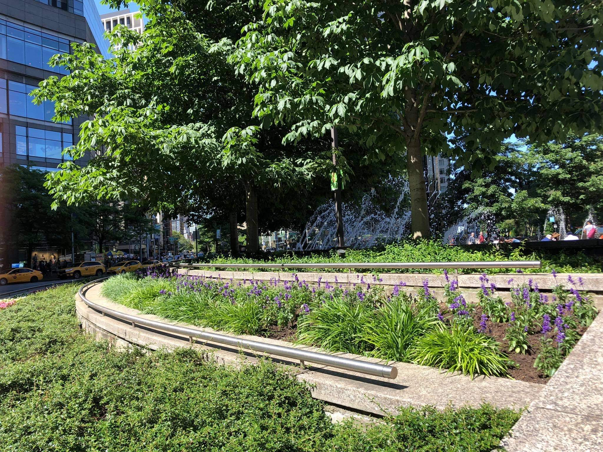
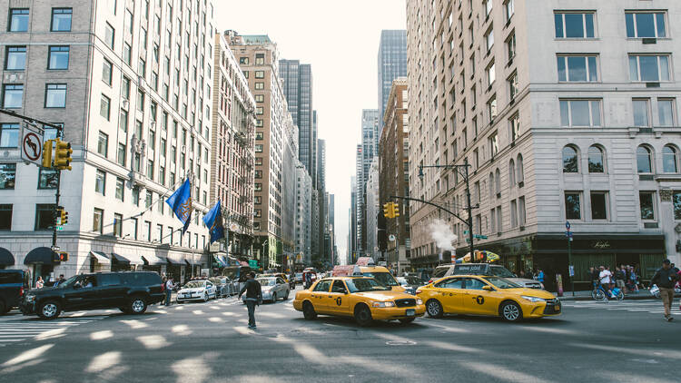
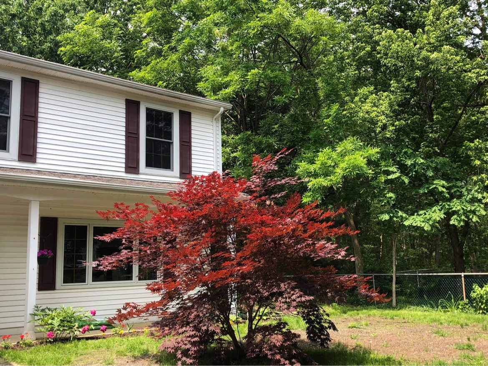
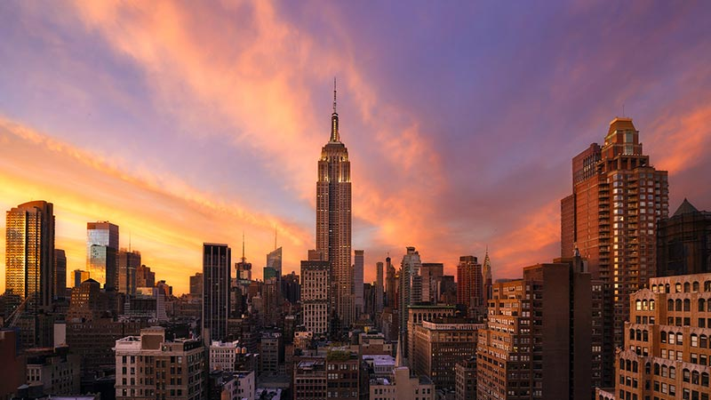
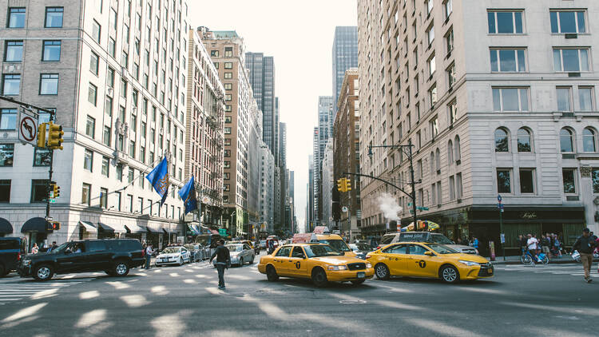
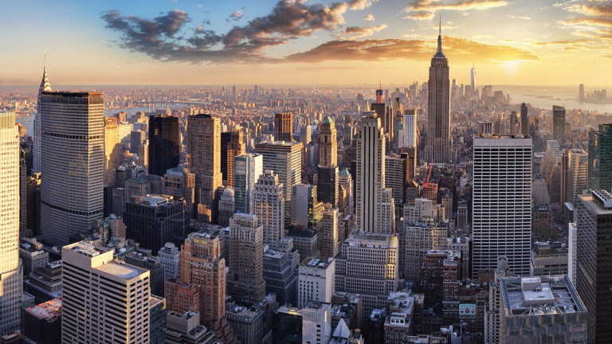

Ню Йорк
Голямата ябълка
Градът на всички мечти
- Забележителности

Снимка на красивата природа на Ню Йорк


|  |
Ню Йорк
Голямата ябълка Градът на всички мечти |
 |
|
Туризмът е значителна
индустрия за града, забележителностите които привличат
милиони са разнообразни. Сред най-емблематичните обекти
са Емпайър Стейт Билдинг, Таймс Скуеър, Статуята на
свободата, Уолстрийт, централата на ООН, катедралата
Свети Патрик, Природонаучният музей и Бруклинския мост.
В Ню Йорк се разполагат многобройни паркове и спортни
площадки, като най-известният сред тях е Сентрал Парк,
който заема централно място в отдиха както на
нюйоркчани, така и на туристи. В южната част на Манхатън
квартали, като Гринуич Вилидж, Сохо и Челси, са
специализирани всеки в отделни направления, като музика
и книги, бутикови стоки и предмети на изкуството.  |
 |